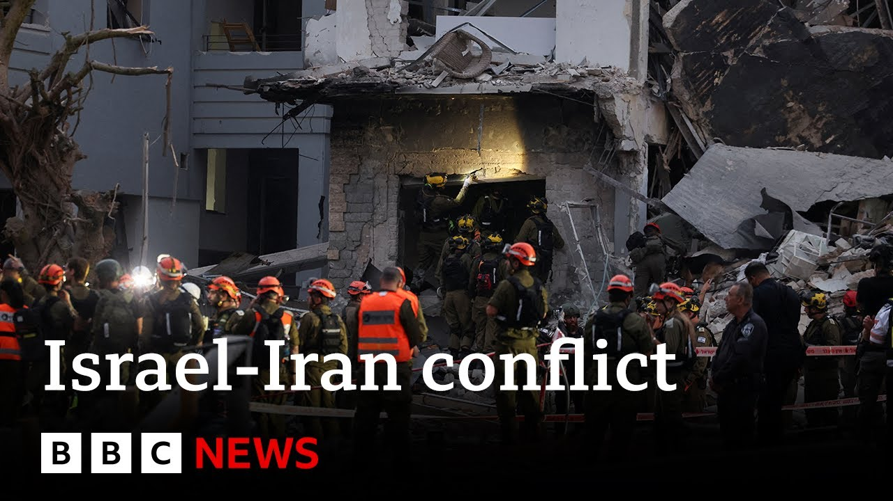

【以色列和伊朗冲突进入第四天，双方持续发动袭击 | BBC新闻】
Summary: The conflict between Israel and Iran has escalated into its fourth day, with both sides exchanging strikes and reporting civilian casualties. Israel warns of retaliation against Tehran, while Iran claims over 220 deaths from Israeli attacks. The situation remains tense with international concerns over further escalation.
摘要： 以色列和伊朗的冲突已进入第四天，双方互相发动袭击并报告平民伤亡。以色列警告将对德黑兰进行报复，而伊朗称以方袭击已造成超过220人死亡。局势持续紧张，国际社会担忧冲突进一步升级。

⏱️ Estimated Reading Time: 14 min
📚 六级生词 📚 雅思生词 📚 托福生词 📚 专八生词 📚 SAT生词 📚 考研生词 📚 GRE生词 📚 高考生词
And we start this hour with the hostilities between Israel and Iran which have now entered a fourth day.
我们以以色列和伊朗之间的敌对行动开始这一小时，冲突现已进入第四天。
Here are some of the latest developments from the last few hours.
以下是过去几小时的最新进展。
Israel's defense minister, Israel cats, has warned that the residents of Tehran will, as he puts it, pay the price for Iranian attacks on his country's citizens.
以色列国防部长警告称，德黑兰居民将为他所说的伊朗对其公民的袭击付出代价。
He says Iran has been deliberately targeting civilian areas.
他表示伊朗一直在蓄意针对平民区。
Israel says the number of people killed by Iranian missiles has risen to 24 since Friday with eight of those deaths coming overnight from Sunday into Monday.
以色列称，自周五以来伊朗导弹造成的死亡人数已升至24人，其中8人死于周日夜间至周一凌晨。
Iran's health ministry says that more than 220 people have been killed in Israeli attacks since Friday.
伊朗卫生部表示，自周五以来以色列的袭击已造成超过220人死亡。
The Israeli military says it hit a command center of Iran's elite Hoods force in Thran.
以色列军方称其袭击了伊朗精锐部队“胡德”在德黑兰的一个指挥中心。
And the Houthi militia in Yemen, a close ally of Iran, has launched more missile strikes against targets in Israel, triggering air raid sirens in several areas.
伊朗的紧密盟友也门胡塞武装向以色列目标发射了更多导弹，引发多个地区空袭警报。
Well, Israel says there have been missile attacks against Jerusalem and Hifur overnight and also in Tel Aviv.
以色列称，耶路撒冷、海法及特拉维夫夜间遭遇导弹袭击。
Our BBC team there filmed these pictures.
我们的BBC团队拍摄了这些画面。
Well, let's take a look at the areas which Iran has targeted with missiles.
让我们看看伊朗用导弹袭击的地区。
Uh these were the attacks in Hifur.
这些是海法遭受的袭击。
This is to the north of Israel and the location of a major port and oil refinery.
该地位于以色列北部，是一个主要港口和炼油厂的所在地。
These pictures were in the skies over Jerusalem.
这些是耶路撒冷上空的画面。
Israel says its air defense systems intercepted various threats and people were told to take cover.
以色列称其防空系统拦截了多种威胁，并告知民众寻找掩护。
Meanwhile, Israel says it struck military sites in central Iran.
与此同时，以色列称其袭击了伊朗中部的军事地点。
Iranian media say a military complex near the capital had been hit.
伊朗媒体称首都附近的一处军事设施遭到袭击。
Now, with BBC journalists not able to work inside Iran, less footage of Israel's attacks has emerged.
由于BBC记者无法在伊朗境内工作，关于以色列袭击的画面较少。
But late on Sunday, Iran confirmed the head of the Revolutionary Guards Intelligence Unit unit, Muhammad Kazmi, had been killed.
但周日深夜，伊朗证实革命卫队情报部门负责人穆罕默德·卡兹米已被击毙。
Well, let's speak to the director general of the Middle East Association and former UK ambassador to Iran, Nicholas Hopton.
现在，我们与中东协会总干事、英国前驻伊朗大使尼古拉斯·霍普顿对话。
Uh, Miss Hopton, thank you so much for joining us on BBC News.
霍普顿女士，非常感谢您加入BBC新闻。
This is an area you know well.
这是您熟悉的领域。
How concerned are you at how quickly events could escalate from where we are now?
您对当前局势可能迅速升级有多担忧？
Good morning.
早上好。
I I think we're at a very uh pivotal moment in a very dangerous situation.
我认为我们正处于一个非常危险的局势中的关键时刻。
Uh since Israel first launched their uh rather unexpected in terms of timing uh the strikes uh Thursday night, uh things have moved very quickly.
自以色列周四夜间发动时机出人意料的袭击以来，事态发展非常迅速。
Uh, I think if Prime Minister Netanyahu had gambled on a swift capitulation by the Iranians, that's clearly not happening and I think the situation is ramping up in terms of tension.
如果内塔尼亚胡总理赌伊朗会迅速投降，显然这并未发生，我认为紧张局势正在升级。
you've seen overly killed many civilians on both sides and I think today leaders uh comes at a very important moment uh not least so that uh the president of the United States Donald Trump uh can uh set out his views and hear from his colleagues because the position of the United States in this conflict will be uh very important to how how it ends and moves forward in the coming days.
双方已有许多平民丧生，我认为今天领导人的行动至关重要，尤其是美国总统特朗普可以阐述其观点并听取同僚意见，因为美国在这场冲突中的立场将对其如何结束及未来几天的发展极为重要。
Yeah, Mr. Hopton, we are having a fair bit of breakup on your line.
霍普顿先生，您的通话有些断续。
I'm just going to p persevere a little bit longer because I do want to hear if if possible what you've got to say.
我会再坚持一会儿，因为我很想听听您的看法。
So hopefully that line will settle.
希望通话能稳定下来。
You mentioned President Trump there.
您提到了特朗普总统。
Just perhaps explain how crucial his role could be in terms of um the relationship between Israel and Iran and his influence in both areas.
能否解释他在以色列和伊朗关系中的关键作用及其对双方的影响力？
I think uh Prime Minister Netanyahu will be seeking to draw the United States into the conflict and obviously uh what Donald Trump decides to do will be uh decisive.
我认为内塔尼亚胡总理会试图将美国拉入冲突，显然特朗普的决定将是决定性的。
Uh the president of the United States has made clear many times that he does not like the United States being involved in foreign wars and at this stage uh the United has limited its role to helping to defend Israel from Iranian uh attacks, air attacks.
美国总统多次明确表示他不喜欢美国卷入外国战争，现阶段美国仅限帮助以色列防御伊朗的空袭。
Now, if Iran, if the US were to take a more front foot uh approach and to be directly involved in targeting Iran, Iran has also said that will hold the United States responsible and to a degree already do.
如果美国采取更直接的行动并直接针对伊朗，伊朗也已表示将追究美国的责任，并在某种程度上已经这样做了。
That lead to a a rapid ramping up of hostilities and I'm sure uh more bloodshed uh on all sides.
这将导致敌对行动迅速升级，我确信各方会有更多流血事件。
Um, also an interesting prospect um is Vladimir Putin or Russia acting as a mediator between uh the two countries.
另一个有趣的前景是普京或俄罗斯作为两国之间的调解人。
What's the relationship like between Russia and Iran and and could that help having their involvement?
俄罗斯与伊朗的关系如何？他们的介入是否有帮助？
Well, um Vladimir of course is an unlikely uh peacemaker given his hostility and offensive against Ukrainian sovereignty, but in this instance he may have a role to play given that he does seem to have a relationship of sorts with Donald Trump.
鉴于普京对乌克兰主权的敌意和进攻，他不太可能是和平使者，但在此情况下他可能发挥作用，因为他似乎与特朗普有一定关系。
the US president and um is the relationship with Iran is is close.
美国总统与伊朗的关系较为密切。
Uh I would say it's tactical more than anything, but uh the Russians and the Iranians do support each other mutually in the face of their global isolation.
我认为这更多是战术性的，但俄罗斯和伊朗确实在全球孤立中相互支持。
Um I think uh the whether Vladimir Putin will be able to engage with the Israelis at this stage is a different question.
普京现阶段能否与以色列接触是另一个问题。
Okay, Nicholas Hopton, we will leave it there.
好的，尼古拉斯·霍普顿，我们就谈到这里。
uh Nicholas Hton there, former UK ambassador to Iran.
英国前驻伊朗大使尼古拉斯·霍普顿。
And once again, apologies for the breakup on the line there at times.
再次为通话断续道歉。
So, I think it was worth uh persevering and uh getting your perspective.
我认为坚持听取您的观点是值得的。
Thank you.
谢谢。
Well, let's go now to the Middle East and talk to our correspondent, Hugo Basha, who's in Petikva, north of Tel Aviv in Israel.
现在让我们前往中东，与驻以色列特拉维夫北部佩塔提克瓦的记者雨果·巴沙对话。
Um hello to you, Hugo.
雨果，你好。
Um just take us through exactly where you are and the damage that you are able to see.
请带我们了解您所在位置及您能看到的破坏情况。
Yeah, it was a long night of attacks.
是的，这是一个漫长的袭击之夜。
again the third consecutive night of these Iranian missile attacks responding to this Israeli campaign that started on Friday and we heard loud explosions uh across the country with air defense systems trying to intercept those missiles that had been fired by Iran.
这是伊朗导弹袭击的连续第三晚，以回应以色列周五开始的行动。我们听到全国各地的巨大爆炸声，防空系统试图拦截伊朗发射的导弹。
Not all of them were intercepted and one of them hit this building here and as you can see there is a lot of destruction.
并非所有导弹都被拦截，其中一枚击中了这栋建筑，如您所见破坏严重。
You can see this massive hole here.
您可以看到这里有一个大洞。
This is the point of impact of the missile.
这是导弹的撞击点。
And this is a 20story building, residential area.
这是一栋20层的住宅楼。
There's a lot of damage as well to the nearby buildings.
附近建筑也受损严重。
A lot of work here underway to clean up the rubble.
大量清理废墟的工作正在进行。
There is, you know, a lot of damage here, destruction to the cars that were parked here because of falling debris.
由于坠落碎片，停放的车辆也遭到严重破坏。
So uh we've been talking to people you know uh here and also uh after a long weekend of of attacks and there is you know a different feeling now because people felt they were protected.
我们与当地居民交谈，经过漫长的袭击周末后，人们的感受有所不同，因为他们曾以为自己受到保护。
Uh there is obviously a very sophisticated air defense system here in Israel but the what the authorities have been saying is that Iran has been using different kinds of of of missiles with you know a large uh with large explosive payloads in those missiles.
以色列拥有非常先进的防空系统，但当局表示伊朗使用了多种导弹，携带大量爆炸性弹头。
So this is you know the damage that those missiles have been causing.
这就是这些导弹造成的破坏。
So they've been you know urging the public to stay alert.
因此他们敦促公众保持警惕。
There's a state of emergency here to seek shelter when the air raid alerts sound because this is you know what the authorities have been you know saying that they expect you know these kinds of attacks to continue as this Israeli offensive uh against Iran continues as well.
这里处于紧急状态，空袭警报响起时需寻找掩护，因为当局预计这类袭击会随着以色列对伊朗的进攻而持续。
We don't know what the target was.
我们不知道目标是什么。
that the Israeli authorities have been accusing uh Iran of deliberately targeting residential areas.
以色列当局指责伊朗蓄意针对居民区。
We don't know whether there was a different target here.
我们不知道这里是否有其他目标。
This is a residential area.
这是一个居民区。
And as you can see, you know, all these buildings now have been evacuated.
如您所见，所有这些建筑已被疏散。
So, we're talking about hundreds, possibly thousands of people who have now been displaced because of the attack that happened here at around 4:00 in the morning.
因此，我们谈论的是数百甚至数千人因凌晨4点左右的袭击而流离失所。
Yeah.
是的。
And Hugo, just in the last few minutes, those updated casualty figures of 24 people killed uh in in Israel uh since Friday.
雨果，就在几分钟前，更新了自周五以来以色列24人死亡的伤亡数字。
And and it's interesting hearing you talking about Israeli people because as you say there is a very sophisticated anti-missile system in Israel.
听您谈论以色列民众很有趣，因为如您所说以色列拥有非常先进的反导弹系统。
So so missiles getting through.
但仍有导弹突破防御。
Do you get a sense of surprise from people that actually these missiles are being able to break those defense systems?
人们是否对这些导弹能突破防御系统感到惊讶？
I think there is an element of shock.
我认为有一定程度的震惊。
I think a lot of people are surprised perhaps with the with what is being happening here in the last few days even though the authorities have been saying that you know this is very sophisticated but it isn't perfect.
尽管当局表示系统非常先进但并不完美，许多人可能对过去几天发生的事感到惊讶。
So again they've been warning the public to stay alert.
因此他们再次警告公众保持警惕。
There's a state of emergency here uh in place and uh they have been indicating that this campaign against Iran that they say is against the country's nuclear and military facilities uh is going to be a prolonged offensive.
这里处于紧急状态，他们表示针对伊朗核和军事设施的进攻将是长期的。
So we're possibly talking about weeks, not days.
因此我们可能谈论的是数周而非数天。
And they say that attacks like these are likely to continue.
他们表示这类袭击可能会持续。
The Iranian authorities about to respond to these attacks.
伊朗当局即将对这些袭击作出回应。
Uh they have described these Israeli attacks as as aggression and that they have you know they have the right to defend themselves.
他们称以色列的袭击是侵略，并表示有权自卫。
So again what you know the message from the Israeli authorities uh to the population here is to remain alert, seek shelter.
因此以色列当局向民众传达的信息仍是保持警惕、寻找掩护。
There is a very strong system in place but it isn't perfect.
现有系统非常强大但并不完美。
Okay.
好的。
Hugo Basha at Peta Tikva just north of Tel Aviv.
驻特拉维夫北部佩塔提克瓦的雨果·巴沙。